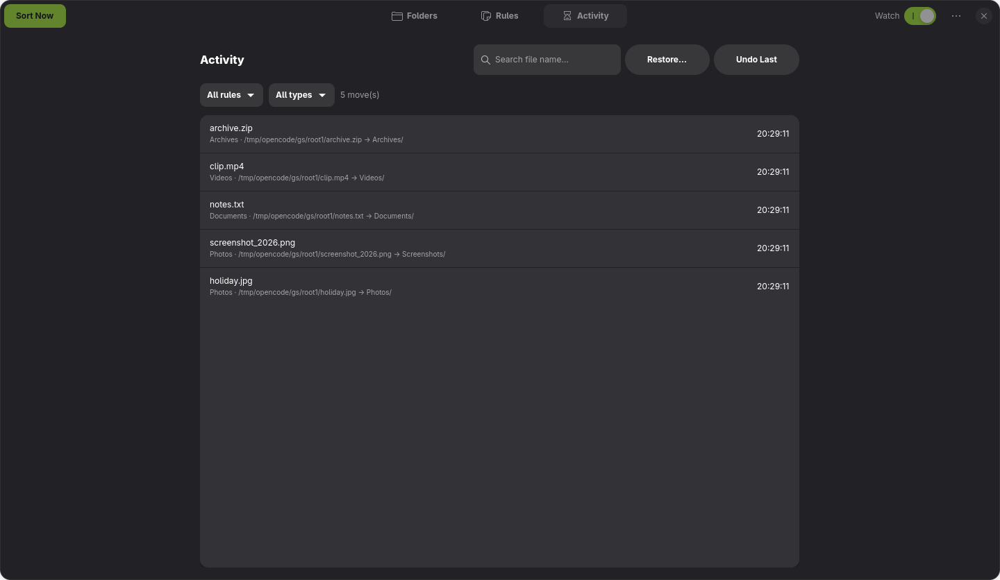
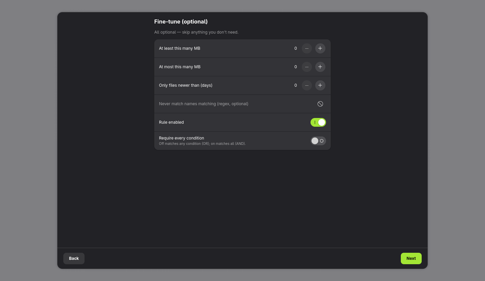
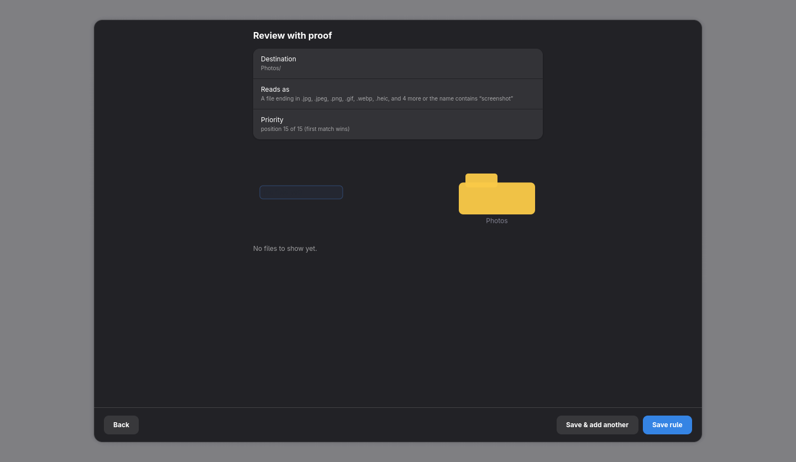

How Funnel sorts a folder.
Funnel reads a folder by the rules attached to it. A sweep or a watcher moves matching files, and each move is written to a journal. Undo reads that journal and puts a file back.
This page describes the GTK4 build. The Windows build has the same four areas: Folders, Rules, Activity, Settings.
Add a folder and choose its scope.
Funnel needs two things from you: a directory and a scope. The scope decides whether the folder follows the shared template or keeps a list of its own.
Open Folders and add a path. ~/Downloads is a common first choice. The folder must be readable and writable by your user account. A permission error on one file appears in the terminal and does not stop the rest of the sweep.
A folder on the shared template inherits the default rule list. A folder with its own rules keeps a separate list. To put a folder back on the template, run gnu-sorter --attach-rules --root ~/Downloads.
The choice is per folder. Two watched folders can use different rules at the same time.
Write a rule in the wizard or the editor.
Both paths write the same rule object. The wizard asks for the fields in order. The advanced editor shows the JSON and accepts direct edits.
-
01
Use the wizard
Open Rules and choose the folder. Pick extensions, a name pattern, or both. Take the suggested destination or choose another one. Set size or age limits, then priority and scope. The last step lists the files the rule would move. Save writes the rule.
-
02
Use the advanced editor
Open the same rule as JSON and edit the fields: name, extensions, match pattern, destination, priority, and limits. Save validates the object.
--export-rulesand--import-rulesmove a rule list between machines.
The field names and match modes are listed in the rules reference.
Run a sweep, or leave the watcher on.
A sweep sorts what is already in each folder. The watcher keeps running and sorts files as they arrive. Both append to the same journal.
gnu-sorter --sweep
gnu-sorter --watch
gnu-sorter --undo-last 1{"v": 2, "id": "6f1c9a0e4b2d", "ts": "2026-11-18 14:22:07", "src": "/home/you/Downloads/report_final_v2.pdf", "dest": "/home/you/Documents/report_final_v2.pdf", "size": 482113, "mtime": 1763475727.4, "rule": "documents", "root": "/home/you/Downloads", "batch": "a1b2c3d4"}--sweep exits when the folders are done. --watch stays in the foreground. --undo-last 1 reverses one journal entry; pass a larger number to reverse more.
The journal lives at ~/.local/share/gnu-sorter/history.log. An entry records the source, destination, size, modification time, rule, watched root, and batch id. When the file passes about 1 MB, Funnel backs it up and keeps the most recent 2,500 entries.
What happens on a move.
The order is fixed. A file passes through these steps once per sweep or watcher event.
-
01
File detected
A watcher event or a sweep scan finds a regular file. Dotfiles, directories and symlinks are left alone.
-
02
Stability window
Funnel reads the size and modification time, waits, then reads them again. A file that is still changing is held for the next pass instead of moved mid-write.
-
03
First matching rule
Rules are checked in priority order. The first match decides the destination. If no rule matches, the file goes to
Needs-review. -
04
Collision-safe rename
If the destination already has that name, Funnel adds a number:
report_final_v2.pdfbecomesreport_final_v2 (1).pdf. The sort path never overwrites a file at the destination. -
05
Journal entry appended
Funnel writes one JSON line with the source, destination, size, modification time, rule, root and batch id. The append happens before the move is reported as done.
-
06
Undo reverses it
gnu-sorter --undo-last 1reads the newest entry and moves the file back to its source.--restoretakes filters and a dry run for larger reversals.
Where it can go wrong.
These are the cases the app handles by design. A failed file is reported and the rest of the sweep continues.
- In-progress file
- Held while the size and modification time change. Download suffixes are held too. The file waits for a later pass.
- Name collision
- Renamed with a number in parentheses. The sort path never overwrites a file at the destination.
- Permission error
- Printed to stderr with the path. The remaining files in the sweep still run.
- Flatpak sandbox
- No tray icon and no login autostart. The sandbox does not allow either. Start Funnel yourself, or run a sweep from a terminal.
- Wrong move
- Reversed from the journal with
--undo-lastor--restore. The source path is recorded in the entry.
If the journal cannot be written, the move is not recorded and undo has nothing to reverse. Check that ~/.local/share/gnu-sorter/ is writable.
The same steps in the interface.
Screens from the GTK4 build. Each plate shows one part of the sequence: a folder, a rule, the wizard, the activity list.







Install Funnel, then add one folder.
The Flatpak build is the primary Linux package. These commands add the project repository, install the app, and start it. The download page covers the user-local and Windows builds.
flatpak remote-add --if-not-exists funnel https://notmicrosoft2000-cmd.github.io/gnu-sorter/flatpak/io.neptunepc.Funnel.flatpakrepo
flatpak install funnel io.neptunepc.Funnel
flatpak run io.neptunepc.FunnelAfter the first launch, add a folder on the Folders page. The documentation covers the command line, rule fields and troubleshooting. The source is on GitHub.